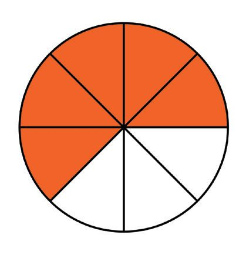
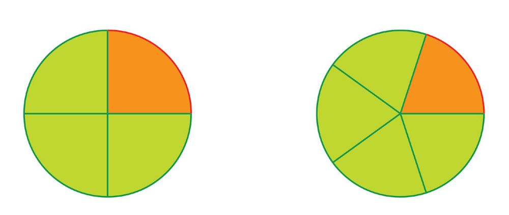
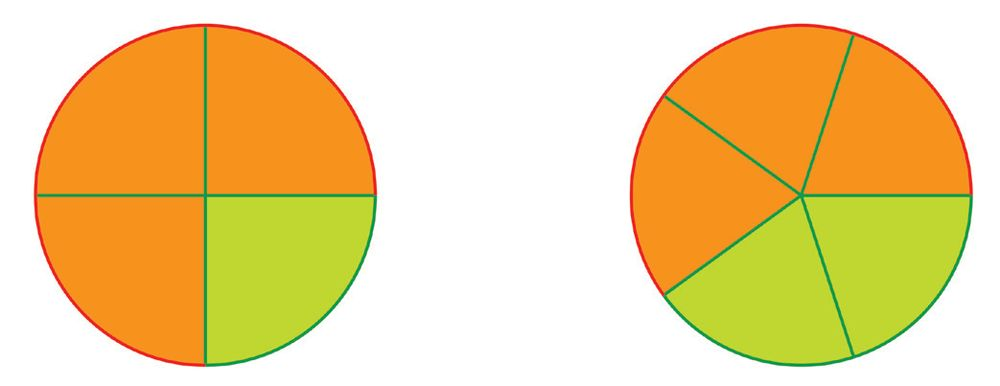

Now 62 of the circle is coloured. 62 is another form of 13 , isn't it?
We can write this also as a sum:
1 1 2 1
6
6
6
3
Suppose a circle is divided into eight equal parts and two of them are joined together .
Can you mentally calculate what fraction of the circle we have now?
2 of 8 equal parts is 82 ; also we can see that
2
=
8
1# 2
=
4 # 2
1
4
So, we have
1 1 2 1
8
8
8
4
We can also show this by drawing circles and colouring parts:
If we join 18 of the circle and 83 of the circle, what fraction of the circle would we get?
We took 1 + 3 = 4 parts of 8 equal parts; that is 84 . We can reduce the numerator and
denominator of this:
1 3 4 1
8
8
8
2
Draw pictures of circle with coloured parts to show this.
Now 2 + 4 = 6 parts are coloured.
We can say this in another way: first we coloured 92 of the ribbon; and then coloured 94
of it; altogether 69 of the ribbon.
We can write this as a sum of fractions:
2 4 6
9
9
9
In this, we can reduce 69 to the lowest terms:
6
=
9
2 # 3
=
3 # 3
2
3
Thus we have,
2 4 6 2
9
9
9
3
Now look at this picture:
What fraction of the ribbon is coloured red?
And the fraction coloured green?
What fraction is coloured altogether?
What sum of fractions do we get from this?
In each of the pictures below, write the parts of each colour and the total coloured parts
as fractions. Write the sum of fractions got from each picture in lowest terms.
Addition of fractions
If a circle is cut into four equal pieces and two of them joined together, we get half a
circle:
What if one more piece is joined to this?
We get three quarters of a circle. Thus half and a quarter make three quarters:
1 1 3
2
4
4
Now see this picture:
A circle is divided into six equal pieces, one of which is coloured red and two of them
coloured yellow. Total number of the pieces coloured is 1 + 2 = 3. How do we write this
as a sum of fractions?
1 2 3
6
6
6
1
3
4 of a circle and 8 of another circle of the same size are cut out and these pieces are
put together. What fraction of the full circle is this?
If the pieces are all alike, we need only count their numbers. What
if we see the one-fourth of the circle as two one-eighths joined
together?
3
8 is 3 such parts.
So 2 + 3 = 5 of 8 equal parts of the circle, which make 85 .
Thus we get
1 3 2 3 5
4 8 8 8 8
Let's look at another problem.
3
Two ribbons of lengths 10
metre and 52 metre are joined end to end. What is the
total length?
The first ribbon is 3 of 10 equal parts of a 1 metre long ribbon:
The second ribbon is 2 of 5 equal parts of a 1 metre long ribbon:
Both are parts of 1 metre, but when we put them together, they are not equal parts. So
how do we write it as a fraction of a metre?
We can look at 52 metre as 4 of 10 equal parts of a metre:
Thus the first ribbon is 3 of 10 equal parts of a metre and the second is 4 of 10 equal
parts of a metre; altogether 7 equal parts:
7
Thus the total length is 10
metre.
As a sum of fractions:
3 2 3 4 7
5
10
10
10
10
What if we join 12 metre and 52 metre?
What did we see in all these problems?
To find the sum of two fractional measures put together, we must see them as sets of
the same equal pieces.
In other words, we must convert both to forms with the same denominator.
54
Page 55
Figure fig_ch04_p055_01 (Page 55)
Arithmetic of Parts
For example, let's compute:
1 +2
4 5
First we must change them into forms with the same denominator.
In all the different forms of 14 , the denominator is a multiple of 4.
In all the different forms of 52 , the denominator is a multiple of 5.
So the same denominator we want for both must be a multiple of 4 and 5.
4 × 5 = 20 is a multiple of both 4 and 5 , isn't it?
#1
1 5=
5
=
4 5 # 4 20
#2 8
2 4=
=
5 4 # 5 20
Now we can calculate the sum:
1 2 5 8 5 8 13
4 5 20 20
20
20
Let's calculate
5+2
8 3
like this.
To write these as forms with the same denominator, what number do we take as the
denominator?
# 5 15
5 3=
=
8 3 # 8 24
# 2 16
2 8=
=
3 8 # 3 24
Now we can add these:
5 2 15 16 15 16 31
8 3 24 24
24
24
In this, we can write 31
24 as
31 24 7 24 7 7 7
24
24
24 24 1 24 1 24
(1) In each pair of pictures below, find the fraction of the circle we get by cutting
up the coloured pieces of both circles and putting them together:
(2) Calculate the sums given below:
(i) 14 + 18 (ii) 34 + 16
(3) There are two taps to fill a tank with water. If the first tap alone is opened, the
tank would fill up in 10 minutes. If the second tap alone is opened, it would take
15 minutes to fill up the tank.
(i) If the first tap alone is opened, what fraction of the tank would be filled in
one minute?
(ii) If the second tap alone is opened, what fraction of the tank would be filled
in one minute?
(iii) If both the taps are opened, what fraction of the tank would be filled in one
minute?
(iv) If both the taps are opened, how much time would it take for the tank to
be filled up?
Some other sums
See these sums :
1 + 1
2
2 =
1
1 + 2
3
3 =
1
1 + 3
4
4 =
1
1 + 4
5
5 =
1
2 + 3
5
5 =
1
What do we do in all these?
Of the two fractions added, one is some parts of one divided into equal parts taken
together; and the other is the remaining parts taken together. When both these are taken
together, we get all the parts, right? In other words, we get the whole.
For each fraction given below, can you mentally calculate the fraction to be
added to make it 1?
(i) 72
Now, look at this problem:
A jar contains three - quarter litre of milk,
and half a litre more is poured into it.
How much does it contain now ?
Suppose the half litre is poured into it in two
steps, a quarter litre each time. Then the first
quarter makes one litre (three quarters and a
quarter) in the jar. How much when the second
quarter is also added? One and a quarter litres.
Let's write this as a sum of fractions :
3 + 1
3 + 1 + 1
4
2 = 4
4
4
1
= 1 + 4
= 1 14
What about doing this sum as before, by equalizing the denominators ?
3 1 3 2 5
4
2
4
4
4
Then we can split 54 like this :
5 4 1 4 1 1 1
1
14
4
4
4
4
4
So, we can do it either way.
What about adding three - quarter litre itself to three - quarter litre ?
Three quarters and a quarter make one; half more is to be added. Altogether one and a
half litres.
3 + 3
3 + 1 + 2
4
4 = 4
4
4
1
+
= 1 2
= 1 12
We can also add like this :
3 3 6 3 # 2 3 2 1 2 1 1 1
4 4 4 2 # 2 2
2
2 2 1 2 12
Let's look at another problem :
Draw two circles of the same size and
colour half of one and two thirds of the
other. If we cut out these pieces, can we
put them together ?
What if we cut them like this ?
We can put them together as one circle and a
remaining small part.
Let's write this down as a sum of fractions :
1 + 2
3 + 4
2
3 = 6
6
= 36 + 36 + 16
= 1 + 16
= 1 16
Another problem:
Anoop and his father went to
buy material for shirts. One and
a half metres for Anoop and two
and a quarter metres for father.
If they buy the same kind of
material for both, how much in
all?
We can do it like this:
One and two make three; half and quarter make three quarters. So, three and three
quarter metres in all.
That is,
1
1
1
1
1 2 + 2 4 = c1 + 2 m + c 2 + 4 m
= ^1 + 2h + c 12 + 14 m
= 3 + 34
= 3 34
(1) Calculate the sums below :
(i) 56 + 13
(ii) 87 + 14
(iii) 56 + 14 (iv) 85 + 34 (v) 2 13 + 3 12
(2) One jar contains one and a half litres of milk and another contains two and a
three quarters litres of milk. How much milk in both the jars together?
(3) Two strings of lengths one and a half metres are joined end to end. What is the
total length?
(4) Ahirath bought one and a half kilograms of beans and three quarter kilograms
of yam. What is the total weight?
Removing parts
From a ribbon three quarters of a metre long , a quarter metre piece is cut off; What is
the length of the remaining piece?
3
4 metre means 3 of 4 equal pieces into which one metre is divided:
Each of these equal parts is 14 metre long. So, cutting off 14 metre means removing one
of these equal parts.
What remains is 2 of the 4 equal parts; that is
2 = 1
4
2
Thus the remaining piece is half a metre long.
We can write the calculation like this:
3 1 1
4
4
2
We can do this subtraction just as we did addition of fractions:
3 1 3 1 2 1
4
4
4
4
2
If a half metre piece is cut off from a three-quarter metre long ribbon, then the
remaining piece is a quarter metre long:
We write this computation as
3 1 1
4
2
4
As in the case of sums, we can do this by equalising denominators:
3 1 3 2 3 2 1
4
2
4
4
4
4
What if one-third of a metre is removed from half a metre?
We must compute 12 − 13 .
We can do this by equalising denominators:
1 1 3 2 3 2 1
2
3
6
6
6
6
Thus what remains is 16 metre.
(i) 12 − 18
(ii) 34 − 18
(iii) 13 − 15 (iv) 52 − 13 (v) 32 − 15
61
Page 62
Figure fig_ch04_p062_01 (Page 62)

Figure fig_ch04_p062_02 (Page 62)
Standard VI - Mathematics
We have seen some pairs of fractions which add up to 1. We can rewrite them as
subtractions:
Sum
Difference
1 1
1
2
2
1
1
1 2 2
1 2
1
3
3
1
2
1 3 3
2
1
1 3 3
1 3
1
4
4
1
3
1 4 4
3
1
1 4 4
1 4
1
5
5
1
4
1 5 5
4
1
1 5 5
2 3
1
5
5
2
3
1 5 5
3
2
1 5 5
Now look at this problem:
From one litre of milk, a quarter litre was used up. How much milk is left?
A quarter and three quarters make one; so, what remains is three-quarter litre of milk.
We write it like this:
We can also do it like this:
1
3
1
3
1
1 4 c4 4m 4 4
1
4
1
4 1 3
1 4 4 4
4
4
Now see this picture:
What fraction of the circle is coloured?
What fraction remains to be coloured?
The fraction to be coloured can be calculated like this:
5
3
1 8 8
Another problem:
From a two and a half kilograms yam,
one and a quarter kilograms piece is cut
off. What is the weight of the remaining
piece?
We can do it in head like this: One kilogram
cut off from two kilograms leaves one
kilogram and a quarter kilogram cut off from
half a kilogram leaves a quarter kilogram. So
what remains is one and a quarter kilograms.
We can write it out like this:
1
1
1
1
1
1
1
1
2 2 1 4 c 2 2 m c1 4 m ^2 1 h c 2 4 m 1 4 1 4
What if we changed the cloth problem done earlier like this?
One and a half metres of cloth was bought for Anoop and two and a quarter
metres for his father. How much more was bought for father?
Here, we cannot subtract half a metre from a quarter metre. So, let's think of another
way.
Half a metre added to one and a half metres makes two metres; another quarter of a
metre added makes two and a quarter metres. Total added is half and a quarter, which is
three quarters. So, three quarters of a metre more. That is,
3
1
1
24 12 4
5
(1) Natasha drew a circle and coloured 12
remains to be coloured?
of it. What fraction of the circle
(2) A bucket can hold 10 litres of water and it contains 3 34 litres. How much more
is needed to fill it?
(3) From a string, one and three quarters of a metre long, a piece half a metre long
is cut off. What is the length of the remaining piece?
(4) A panchayat constructed a new road, 14 34 kilometres long last year. This year, a
road 16 14 kilometres long was constructed. How much more was constructed
this year?
(5) Ashadev bought 20 metres of string. He cut off a piece 5 34 metres long first,
and then a piece 6 12 metres long later. What is the length of string left?
(6) The milk society got 75 14 litres in the morning and 55 12 litres in the evening.
Of this, 85 34 litres of milk is sold. How much milk is left?
Large and small
Which is larger, 52 or 53 ?
How did you decide that 53 is larger?
2
3
5 is 2 parts of 5 equal parts taken together. To get 5 we must take 3 such parts together.
Thus the number 52 is less than the number 53 . We write it like this:
2
3
5 1 5
64
Page 65
Figure fig_ch04_p065_01 (Page 65)

Figure fig_ch04_p065_02 (Page 65)

Figure fig_ch04_p065_03 (Page 65)
Arithmetic of Parts
On the other hand, 53 is greater than 52 .
This we write in shorthand as
3
2
5 2 5
Similarly , which of 83 and 85 is smaller and which is larger?
How do we write these in shorthand?
In general, we can say this
Of two fractions with the same denominator, the one with larger
numerator is the larger and the one with smaller numerator is the smaller.
In other words, by increasing the numerator alone makes a fraction larger. For example:
1 2 3 4
5151515
On the other hand, what happens if the denominator alone is increased?
For example, let's take 34 and 53
Each of 4 equal parts is larger than each of 5 equal parts:
So, 3 of the first kind of pieces taken together is larger than 3 of the second kind of
pieces:
This means 34 2 53
What can we say in general?
Of two fractions with the same numerator, the one with larger
denominator is smaller and the one with smaller denominator is larger
We can say it like this: if the denominator alone of a fraction is increased, the fraction
becomes smaller. For example,
5 5 5 5
6272829
To compare two fractions with the same denominator, we need only compare the
numerators; to compare two fractions with the same numerator, we need only compare
the denominators.
What if both the numerator and denominator are different?
For example, which of 12 and 32 is the larger?
We can convert any two fractions into forms with the same denominators, right?
1 3=
2 4
=
2 6
3 6
Which of 36 and 64 is the larger?
So, which of 12 and 32 is the larger?
1
2
2 1 3
(1) Find the larger and smaller of each pair of fractions below and write this using
the < or > symbol:
(i) 52 , 53
(ii) 52 , 32
(iii) 52 , 34
(iv) 37 , 92
(v) 72 , 83
(vi) 94 , 83
(2) Arrange each triple of fractions below from the smallest to the largest and write